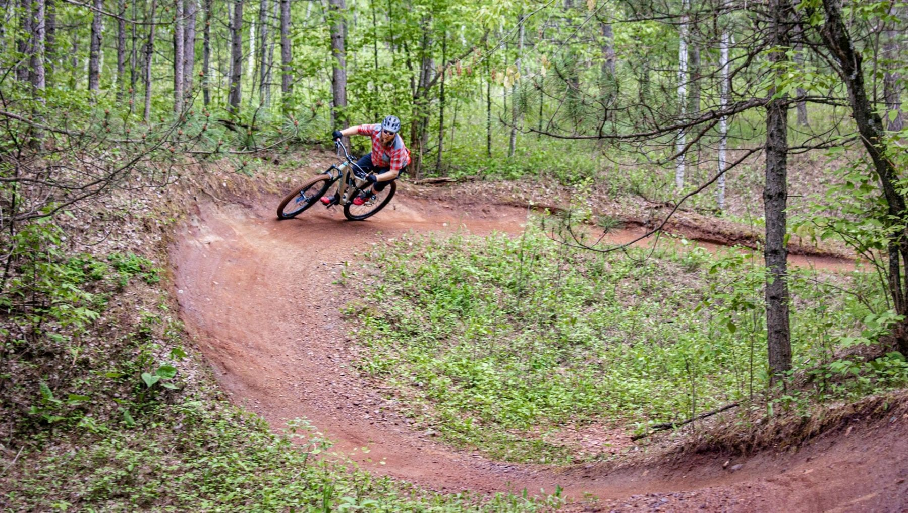
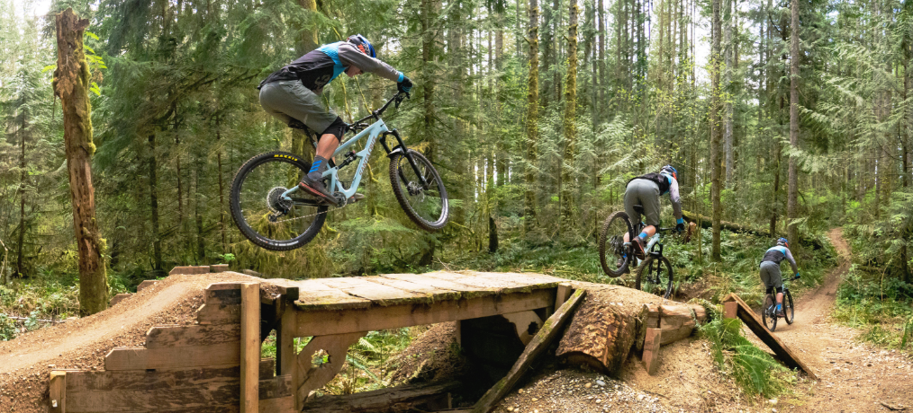
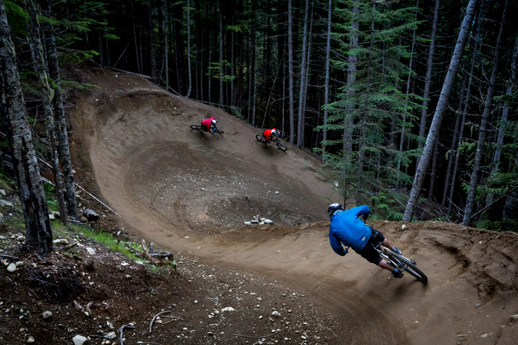
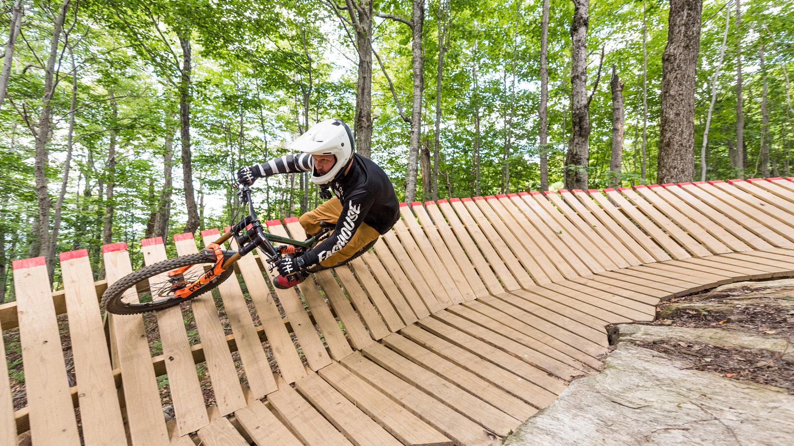

Here is my gallery. In this gallery I will show you some images of what Mountain Biking is like. I will show you some of the trails and features that are found in Mountain Biking.
This is one of many trails in the world. This trail is a rather basic trail that only contains a turn from the image. Still a rather fun trail to relax and Mountain Bike

This is a feature that is found in Mountain Bike trails. This specific feature is a little more advanced than you will find on other trails but, it can be either used as a drop or a roll down.
This trail contains more advanced features as this trail is a black diamond trail. I have ridden on this trail and it is at a mountain bike park called Duthie Hill. This trail is called HLC which has move advanced features than other trails.
This trail is called A line and it is a double black diamond at whistler mountain bike park. It has advanced features such as large drops, large berms, and large jumps. This trail is an extremely popular trail in the Mouintain Biking Community
This trail contains an advanced feature that looks hard to ride but isn't actually that hard to ride. It is called a wall ride as you and your bike are almost sideways. I have ridden a few of these and the way to stay on is by keeping enough speed through it.